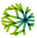

Some links to related resources:
|
Jan Benda: relacs main developer. |
|
COMEDI: Linux control and measurement device interface, used by the relacs comedi device plugins for accessing data acquisition boards. |
|
RTAI: Real-time Linux, needed for the dynamic clamp plugins (part of the comedi device plugins). |
|
Qt4: Cross-platform application and UI framework used for programming the GUI and the threads. |
| GSL-GNU scientific library: numerical library for C and C++ programmers. | |
| Doxygen: Doxygen is a documentation system for C++, C, Java, ... |
 |
npi electronic GmbH: Single electrode clamp amplifiers (SEC), the hardware needed not only for the dynamic clamp. |
 |
LabLog: Laboratory Logbook by Jan Grewe manages your data. Supports odML import. |
 |
G-Node: German neuroinformatics node. Hosts odML terminologies at http://www.g-node.de/odml |
 |
incf: International neuroinformatics coordinating facility. |
|  | CARMEN: Virtual laboratory for neurophysiology. |
 |
RTXI - Real-Time eXperiment Interface: A real time Linux dynamic clamp program. |
| MeaBench | MeaBench: Multielectrodearray recording software. |
 |
IT++: a C++ library of mathematical, signal processing and communication routines. |
| KlustaKwik: program for unsupervised classification of multidimensional continuous data (spike-sorting). | |
| EToS | EToS: Efficient technology of spike-sorting. |
| NeuroDebian: Debian neuroscience repository. | |
 |
Debian science electrophysiology packages. |